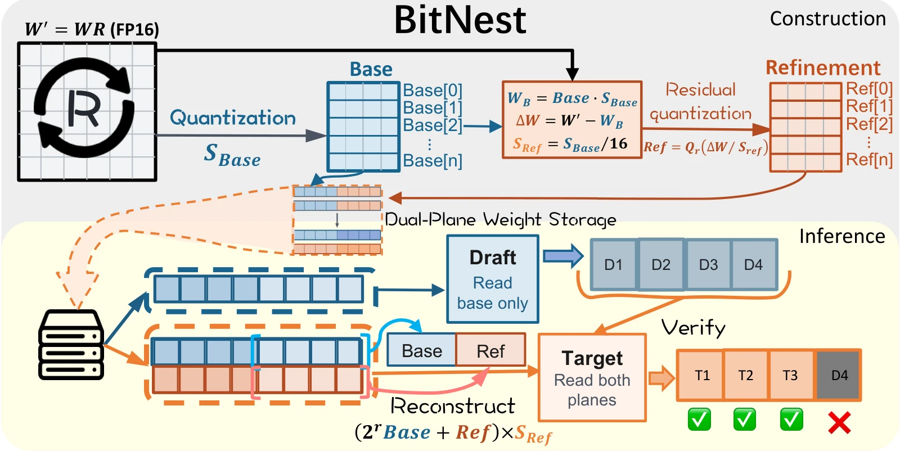
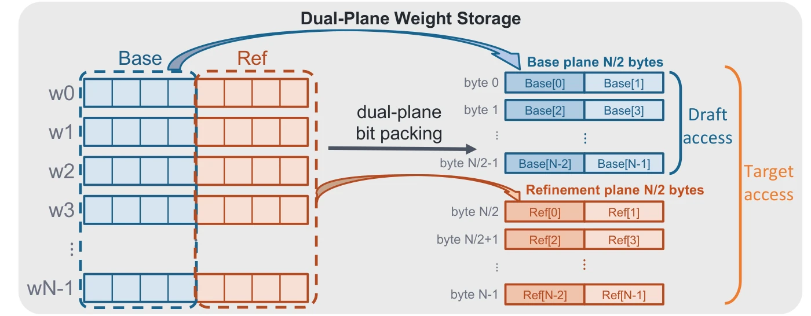
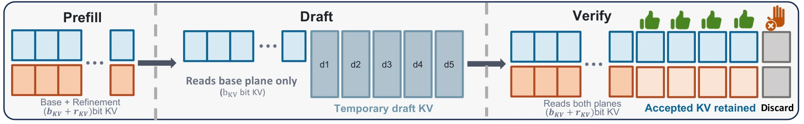

Bit-Nested Speculative Decoding for Memory-Efficient LLM Inference Acceleration
Recorded run
Both lanes replay a real run in real time. Each token appears at the moment the GPU produced it, prefill included. In the BitNest lane, shaded tokens were proposed by the 4-bit draft and accepted by the 8-bit target; orange tokens came from the target itself.
BitNest rounds: γ draft slots, then the target's token
Abstract
Speculative decoding needs a cheap draft model, and keeping a separate one costs memory. BitNest embeds a low-precision draft inside the higher-precision target weights. A single 8-bit tensor serves both: the target reads all 8 bits, the draft reads only the high 4 bits. Rather than truncating an 8-bit model, BitNest first builds a strong low-precision foundation and then recovers the higher precision through a residual refinement. The same nesting extends to the KV cache for long contexts. Across 7B–8B models, BitNest reaches an average speculative acceptance rate of 95.2% and a 1.48–1.61× end-to-end speedup over FP16 autoregressive decoding.
Method

Learned rotations (SpinQuant) are fused into the weights so that 4-bit quantization is accurate.
The 4-bit base is fitted first with GPTQ, so the draft is a strong model in its own right.
The refinement rounds the remaining error on a 16× finer grid (s_Ref = s_Base/16), recovering 8-bit quality in closed form.


Results
Single NVIDIA RTX A6000, batch 1, identical 2,048-token prompts for every method, 256 generated tokens. Speedup is measured against the 16-bit autoregressive baseline of the same inference engine.
Speedup over 16-bit autoregressive decoding (1.0× ring). Hover an axis for every method's value.
Quality change relative to FP16: lower perplexity counts as better on the five language-modeling sets, higher accuracy on GSM8K. 0% is FP16 quality; bars to the left are worse. Click a legend entry to hide it and rescale.
QSpec uses a W4A16 target and is evaluated with its own inference engine.
Reading only the KV4 base during drafting matters more as the context grows. Hover for every method at one context length.
(a) Speedup over 16-bit AR
(b) Peak GPU memory, GiB
Percent of draft tokens accepted, 2K prefixes, each method's own speculation length γ and acceptance definition.
NVIDIA Jetson Orin NX (16 GB and 8 GB), greedy decoding, 256 tokens; energy averaged over the decode phase. OpenVLA-7B on LIBERO Spatial.
@article{yang2026bitnest,
title = {BitNest: Bit-Nested Speculative Decoding for Memory-Efficient LLM Inference Acceleration},
author = {Yang, Chence and Cheng, Ningxi and Akbari, Arash and Tan, Qitao and Zhu, Qingchan and Zhang, Ci and Yang, Changdi and Wang, Yanzhi and Niu, Wei and Wang, Jinhui and Lu, Jin and Yuan, Geng},
journal = {arXiv preprint arXiv:2610.02800},
year = {2026}
}